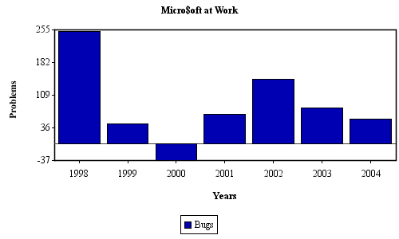
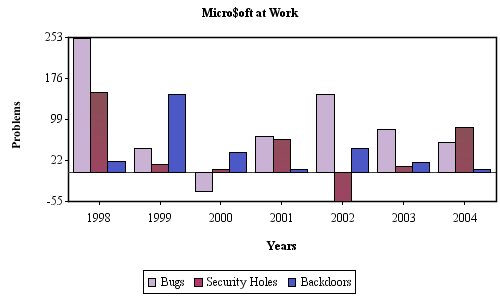
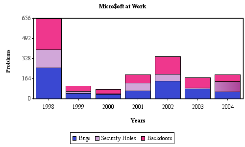
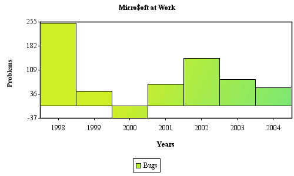
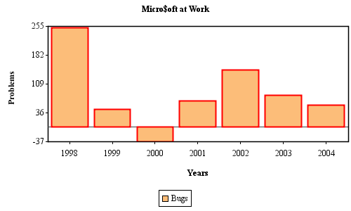
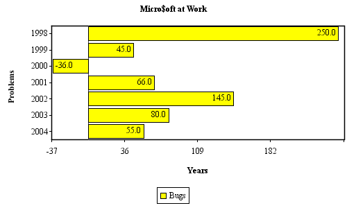
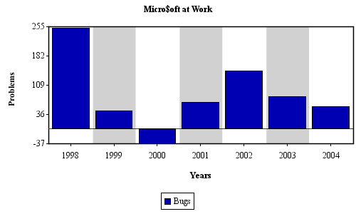

| All of the bar charts can be plotted horizontally. To do this, simply pass a 'true' boolean to the AxisProperties Constructor. However, only the Bar and Clustered Bar can have value labels on the plot area. |
| Example |
| Here is a simple Vertical Bar Chart. This chart can be plotted horizontally by simply passing 'true' to the AxisProperties Constructor. |
|
String[] xAxisLabels= { "1998", "1999", "2000", "2001", "2002", "2003", "2004" }; String xAxisTitle= "Years"; String yAxisTitle= "Problems"; String title= "Micro$oft at Work"; DataSeries dataSeries = new DataSeries( xAxisLabels, xAxisTitle, yAxisTitle, title ); double[][] data= new double[][]{ { 250, 45, -36, 66, 145, 80, 55 } }; String[] legendLabels= { "Bugs" }; Paint[] paints= new Paint[]{ Color.blue.darker() }; BarChartProperties barChartProperties= new BarChartProperties(); AxisChartDataSet axisChartDataSet= new AxisChartDataSet( data, legendLabels, paints, ChartType.BAR, barChartProperties ); dataSeries.addIAxisPlotDataSet( axisChartDataSet ); ChartProperties chartProperties= new ChartProperties(); //---to make this plot horizontally, pass true to the AxisProperties Constructor //AxisProperties axisProperties= new AxisProperties( true ); AxisProperties axisProperties= new AxisProperties(); LegendProperties legendProperties= new LegendProperties(); AxisChart axisChart= new AxisChart( dataSeries, chartProperties, axisProperties, legendProperties, AxisCharts.width, AxisCharts.height ); |
|  |
| Clustered Bars |
| Here is an example of a Clustered Bar Chart. Notice it is the same as a regular Bar Chart except for the ChartType and the chart specific properties. This chart can be plotted horizontally by simply passing 'true' to the AxisProperties Constructor. |
|
String[] xAxisLabels= { "1998", "1999", "2000", "2001", "2002", "2003", "2004" }; String xAxisTitle= "Years"; String yAxisTitle= "Problems"; String title= "Micro$oft at Work"; DataSeries dataSeries = new DataSeries( xAxisLabels, xAxisTitle, yAxisTitle, title ); double[][] data= new double[][]{ { 250, 45, -36, 66, 145, 80, 55 }, { 150, 15, 6, 62, -54, 10, 84 }, { 20, 145, 36, 6, 45, 18, 5 } }; String[] legendLabels= { "Bugs", "Security Holes", "Backdoors" }; Paint[] paints= TestDataGenerator.getRandomPaints( 3 ); ClusteredBarChartProperties clusteredBarChartProperties= new ClusteredBarChartProperties(); AxisChartDataSet axisChartDataSet= new AxisChartDataSet( data, legendLabels, paints, ChartType.BAR_CLUSTERED, clusteredBarChartProperties ); dataSeries.addIAxisPlotDataSet( axisChartDataSet ); ChartProperties chartProperties= new ChartProperties(); //---to make this plot horizontally, pass true to the AxisProperties Constructor //AxisProperties axisProperties= new AxisProperties( true ); AxisProperties axisProperties= new AxisProperties(); LegendProperties legendProperties= new LegendProperties(); AxisChart axisChart= new AxisChart( dataSeries, chartProperties, axisProperties, legendProperties, AxisCharts.width, AxisCharts.height ); |
|  |
| Stacked Bars |
| Here is an example of a Stacked Bar Chart. Notice it is the same as a regular Bar Chart except for the ChartType and the chart specific properties. This chart can be plotted horizontally by simply passing 'true' to the AxisProperties Constructor. |
|
String[] xAxisLabels= { "1998", "1999", "2000", "2001", "2002", "2003", "2004" }; String xAxisTitle= "Years"; String yAxisTitle= "Problems"; String title= "Micro$oft at Work"; DataSeries dataSeries = new DataSeries( xAxisLabels, xAxisTitle, yAxisTitle, title ); double[][] data= new double[][]{ { 250, 45, 36, 66, 145, 80, 55 }, { 150, 15, 6, 62, 54, 10, 84 }, { 250, 45, 36, 66, 145, 80, 55 } }; String[] legendLabels= { "Bugs", "Security Holes", "Backdoors" }; Paint[] paints= TestDataGenerator.getRandomPaints( 3 ); StackedBarChartProperties stackedBarChartProperties= new StackedBarChartProperties(); AxisChartDataSet axisChartDataSet= new AxisChartDataSet( data, legendLabels, paints, ChartType.BAR_STACKED, stackedBarChartProperties ); dataSeries.addIAxisPlotDataSet( axisChartDataSet ); ChartProperties chartProperties= new ChartProperties(); //---to make this plot horizontally, pass true to the AxisProperties Constructor //AxisProperties axisProperties= new AxisProperties( true ); AxisProperties axisProperties= new AxisProperties(); LegendProperties legendProperties= new LegendProperties(); AxisChart axisChart= new AxisChart( dataSeries, chartProperties, axisProperties, legendProperties, AxisCharts.width, AxisCharts.height ); |
|  |
| Bar Widths |
|
jCharts allows you to specify the width of the bars in the chart relative to the amount of space allocated
to each scale item. This is specifed by a percentage value, 1=100%, .5=50%, etc... This feature works the same in all of the Bar Chart Types, as all their chart specific properties extend BarChartProperties. |
|
BarChartProperties barChartProperties= new BarChartProperties(); barChartProperties.setWidthPercentage( 1f ); |
|  |
| Bar Outlines |
|
jCharts allows you to specify the 'outline' properties of the bars. The default values are to show
a one pixel wide, black outline. This feature works the same in all of the Bar Chart Types, as all their chart specific properties extend BarChartProperties. |
|
BarChartProperties barChartProperties= new BarChartProperties(); barChartProperties.setShowOutlinesFlag( true ); ChartStroke outlineChartStroke= new ChartStroke( new BasicStroke( 2.0f ), Color.red ); barChartProperties.setBarOutlineStroke( outlineChartStroke ); |
|  |
| Value Labels |
|
It is now possible to display value labels on your Bar and Clustered Bar charts, but not Stacked Bar Charts. To do this, add a
ValueLabelRenderer to the BarChartProperties or
ClusteredBarChartProperties Object by calling the
addPostRenderEventListener( PostAxisValueRenderListener ) method.
You can set the Font and Paint used for the Values on the ValueLabelRenderer Object. |
|
String[] xAxisLabels= { "1998", "1999", "2000", "2001", "2002", "2003", "2004" }; String xAxisTitle= "Years"; String yAxisTitle= "Problems"; String title= "Micro$oft at Work"; DataSeries dataSeries = new DataSeries( xAxisLabels, xAxisTitle, yAxisTitle, title ); double[][] data= new double[][]{ { 250, 45, -36, 66, 145, 80, 55 } }; String[] legendLabels= { "Bugs" }; Paint[] paints= new Paint[]{ Color.yellow }; BarChartProperties barChartProperties= new BarChartProperties(); ValueLabelRenderer valueLabelRenderer = new ValueLabelRenderer( false, true, -1 ); valueLabelRenderer.setValueLabelPosition( ValueLabelPosition.ON_TOP ); valueLabelRenderer.useVerticalLabels( false ); barChartProperties.addPostRenderEventListener( valueLabelRenderer ); AxisChartDataSet axisChartDataSet= new AxisChartDataSet( data, legendLabels, paints, ChartType.BAR, barChartProperties ); dataSeries.addIAxisPlotDataSet( axisChartDataSet ); ChartProperties chartProperties= new ChartProperties(); //---to make this plot horizontally, pass true to the AxisProperties Constructor AxisProperties axisProperties= new AxisProperties( true ); LegendProperties legendProperties= new LegendProperties(); AxisChart axisChart= new AxisChart( dataSeries, chartProperties, axisProperties, legendProperties, AxisCharts.width, AxisCharts.height ); |
|  |
| Bar Backgrounds |
|
A implementation of the PreAxisValueRenderListener is provided to apply Paint Objects to the Bar and Clustered Bar backgrounds, but not Stacked Bars.
To do this, add a BackgroundRenderer to the BarChartProperties or
ClusteredBarChartProperties Object by calling the
addPreRenderEventListener( PreAxisValueRenderListener ) method.
You can set the Paint used for on the BackgroundRenderer Object. |
|
String[] xAxisLabels= { "1998", "1999", "2000", "2001", "2002", "2003", "2004" }; String xAxisTitle= "Years"; String yAxisTitle= "Problems"; String title= "Micro$oft at Work"; DataSeries dataSeries = new DataSeries( xAxisLabels, xAxisTitle, yAxisTitle, title ); double[][] data= new double[][]{ { 250, 45, -36, 66, 145, 80, 55 } }; String[] legendLabels= { "Bugs" }; Paint[] paints= new Paint[]{ Color.yellow }; BarChartProperties barChartProperties= new BarChartProperties(); //---paints over the background of every other bar area. BackgroundRenderer backgroundRenderer = new BackgroundRenderer( new Color( 20, 20, 20, 50 ) ); barChartProperties.addPreRenderEventListener( backgroundRenderer ); AxisChartDataSet axisChartDataSet= new AxisChartDataSet( data, legendLabels, paints, ChartType.BAR, barChartProperties ); dataSeries.addIAxisPlotDataSet( axisChartDataSet ); ChartProperties chartProperties= new ChartProperties(); //---to make this plot horizontally, pass true to the AxisProperties Constructor AxisProperties axisProperties= new AxisProperties( true ); LegendProperties legendProperties= new LegendProperties(); AxisChart axisChart= new AxisChart( dataSeries, chartProperties, axisProperties, legendProperties, AxisCharts.width, AxisCharts.height ); |
|  |
| Other Custom Renderers |
|
By now you should see the flexibility of the render event listeners. They allow you to create custom renderers for your charts without having
to hack the source of jCharts. This feature will be rolled through other charts and no doubt be copied by certain other charting libraries. Consult the javadocs for more information on the interfaces required for your own custom renderers and please, donate the code back to jCharts if you come up with something cool. |